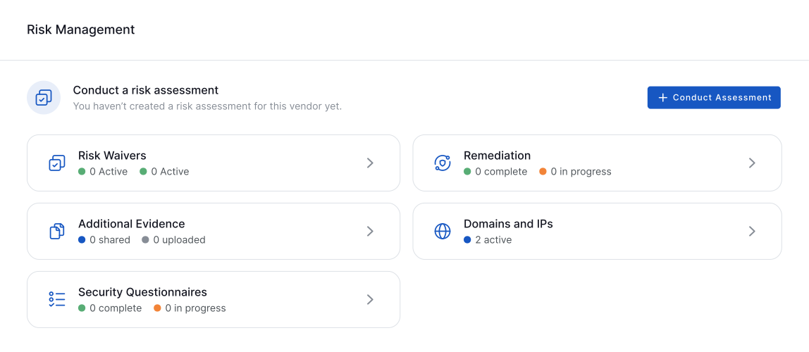
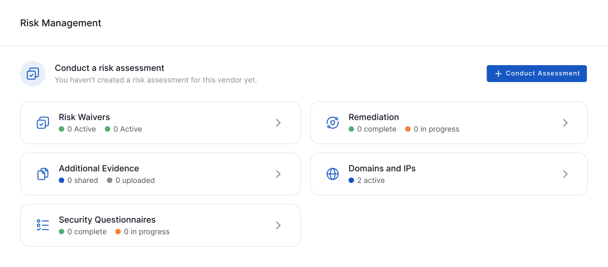
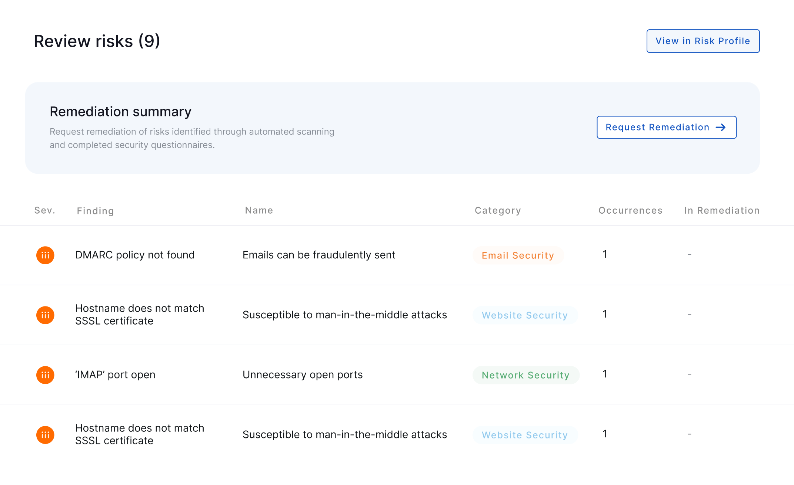
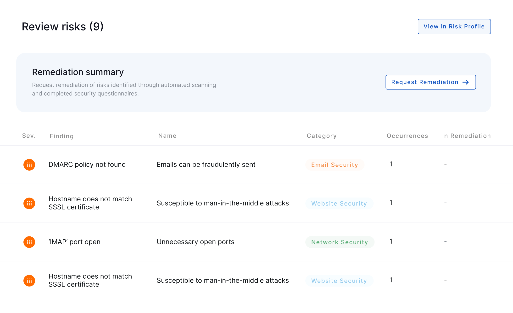
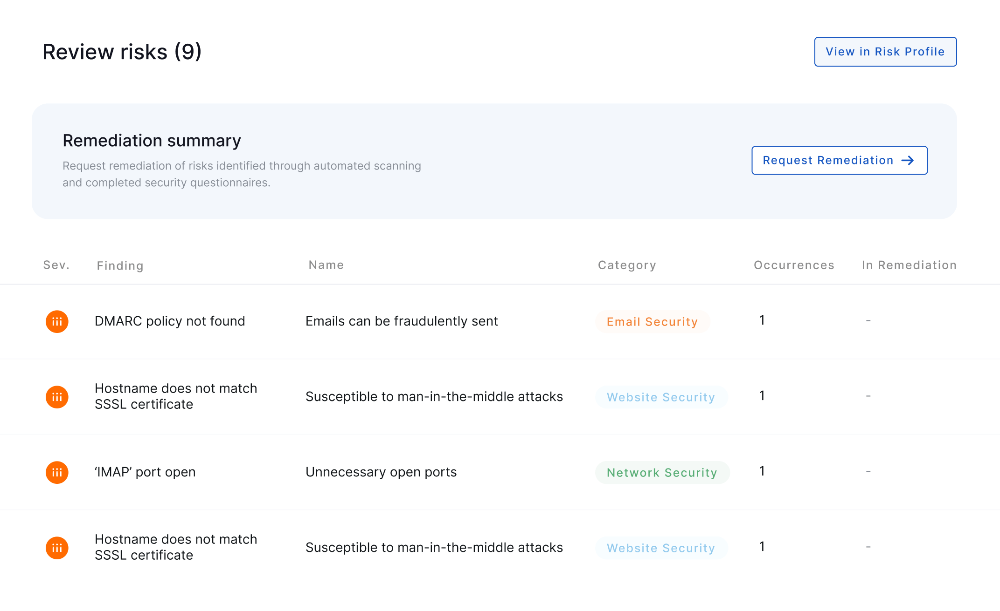

Trusted by hundreds of companies worldwide
Trusted by hundreds of companies worldwide
Gain Insights Into the IT VRM Market
We believe this Gartner report highlights UpGuard’s firm positioning in the IT VRM Market:
 Complete IT VRM capabilities
Complete IT VRM capabilities- Use cases across primary IT VRM categories
- Broad industry coverage and high mid-market presence
Get the Report
Protecting the world’s data
We believe that sensitive data exposure, whether accidental or intentional, is a problem worth fixing. We obsessively seek out elegant, robust ways to enable you to protect you and your customers’ sensitive data. Because we eliminate needless manual processes and extraneous details, you get started with UpGuard in days, not weeks.

Why Manage Vendor Risk With UpGuard?
We believe this Gartner report highlights UpGuard’s firm positioning in the IT VRM Market:
Full Risk Assessment Workflow
Gather evidence, assess risks, and request remediation all in a single automated workflow.
2 Million+ Organizations Scanned Daily
Scan vendors on demand with instant security ratings for point-in-time reporting.
Accurate Risk Insights
Continuously monitor for data leaks with the help of our expert security team and AI-assisted engine.
Why Manage Vendor Risk With UpGuard?
We believe that sensitive data exposure, whether accidental or intentional, is a problem worth fixing. We obsessively seek out elegant.
Full Risk Assessment Workflow
Gather evidence, assess risks, and request remediation all in a single automated workflow.
Over 2 Million Organizations Scanned Daily
Scan vendors on demand with instant security ratings for point-in-time reporting.
Accurate Risk Insights
Gather evidence, assess risks, and request remediation all in a single automated workflow.
 

"The market for IT vendor risk management (IT VRM) solutions is mature with a strong range of established capabilities to manage risk assessment workflows across a broad set of industries and geographies."
- The 2022 Gartner® Market Guide: IT Vendor Risk Management Solutions
Why Manage Vendor Risk With UpGuard?
Full Risk Assessment Workflow
Gather evidence, assess risks, and request remediation all in a single automated workflow.
Over 2 Million Organizations Scanned Daily
Scan vendors on demand with instant security ratings for point-in-time reporting.
Prevent False Positives | Accurate Risk Insights
Gather evidence, assess risks, and request remediation all in a single automated workflow.
Gain Insights Into the IT VRM Market
We believe this Gartner report highlights UpGuard’s firm positioning in the IT VRM Market:
- Complete IT VRM capabilities
- Use cases across primary IT VRM categories
- Broad industry coverage and high mid-market presence
Get the report